Lines and planes
| > | restart; with(LinearAlgebra): with(VectorCalculus): with(plots): with(student): |
Warning, the names &x, CrossProduct and DotProduct have been rebound
Warning, the assigned names <,> and <|> now have a global binding
Warning, these protected names have been redefined and unprotected: *, +, ., D, Vector, diff, int, limit, series
Warning, the name changecoords has been redefined
Warning, the protected name D has had its previous binding removed and has been assigned
Lines
A line can be written as a list of parametric equations. So, the line through (A,B,C) and parallel to <a,b,c> is
| > | line:= x=A+a*t, y=B+b*t, z=C+c*t ; |
Remember in Maple that := represents a variable assignment, whereas = represents a mathematical statement. So x, y, and z in the above are not assigned values.
A more sophisticated point of view is that a line is a vector whose components are expressions in t:
| > | linevec:= <A,B,C> + t*<a,b,c>; |
Which form you use is mostly a matter of taste for now.
The symmetric (nonparametric) form of the line equations is not very useful in Maple.
Example
Find parametric equations for the line through the points (-1,0,5) and (3,3,-2).
The first step is to find a parallel vector.
| > | P:= [-1,0,5]:
Q:= [3,3,-2]: |
| > | PQ:= Vector(Q-P); |
From here it's simple to type in the equations as above.
| > | line:= x=-1+4*t, y=0+3*t, z=5-7*t; |
| > | linevec:= Vector(P) + t*PQ; |
Use spacecurve to make a plot of the line. (This is in the plots package). Unfortunately, it wants a list, not a vector.
| > | spacecurve( convert(linevec,list), t=-3..3, color=blue, axes=boxed ); |
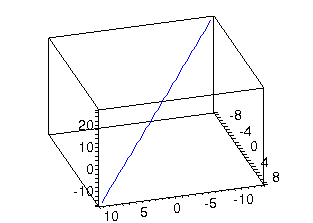
Planes
A plane is defined by a normal and a point on the plane and can be written as a single equation. So the plane through (A,B,C) and normal to <a,b,c> is
| > | plane:= a*(x-A) + b*(y-B) + c*(z-C) = 0; |
Again, there is a vector restatement:
| > | plane:= <a,b,c> . (<x,y,z> - <A,B,C>) = 0; |
Example
Find the plane through the points [1,2,-3], [0,4,0], and [5,4,-1].
First we take a cross product to get a normal to the plane.
| > | P:=[1,2,-3]: Q:=[0,4,0]: R:=[5,4,-1]: |
| > | n:= Vector(Q-P) &x Vector(R-P); |
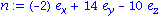
You can now type in the equation directly as above. Or,
| > | plane:= n.<x,y,z> = n.Vector(P); |
There's more than one way to plot a plane, but this one is almost foolproof.
| > | with(plots): |
| > | implicitplot3d( plane, x=-10..10,y=-10..10,z=-10..10, axes=boxed ); |
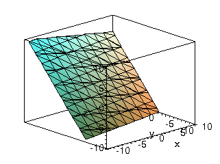
In general you may have to experiment to get the ranges on the variables.
Intersections
Example: Line and plane
Given the line and plane
| > | line:= x=1+2*t, y=2+5*t, z=3*t; |
| > | plane:= x+y+z=2; |
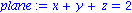
find the point(s) at which they intersect, if any.
At an intersection, all the given equations must be true. This is enough to determine all the unknowns.
| > | eqns:= {line,plane}; |
| > | solve( eqns, {x,y,z,t} ); |
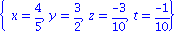
From the solution, we can read off the coordinates of the point. (The value of t is not relevant to the answer, although we did need it as an intermediate step.)
| > | pt:= [ 4/5, 3/2, -3/10 ]; |
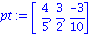
To make a plot illustrating the intersection:
| > | p1:= spacecurve( [ 1+2*t, 2+5*t, 3*t ], t=-3..3, color=blue ): |
| > | p2:= implicitplot3d( plane, x=-10..10, y=-10..10, z=-10..10, style=wireframe, color=gray ): |
| > | p3:= pointplot3d( pt, color=red, symbol=box, symbolsize=16 ): |
| > | display( {p1,p2,p3}, axes=boxed, scaling=constrained ); |
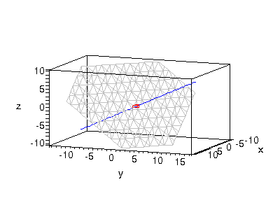
Example: Two planes
Find the intersection of the planes
| > | plane1:= x+y+z=2; |
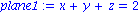
| > | plane2:= -x+4*y+z=1; |
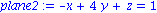
First method
We can read off the normals instantly.
| > | n1:= <1,1,1>;
n2:= <-1,4,1>; |
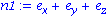
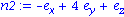
Since the intersection line lies in both planes, it is orthogonal to both of the planes' normals. The cross product of those normals has the same property. Thus the line must be parallel to it.
| > | v:= n1 &x n2; |
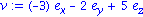
To complete the line description, we must find a point on the line. This point lies in both planes, so both plane equations must hold. These are not enough to uniquely determine x, y, and z (there are infinitely many points on the line). Therefore, we add an arbitrary equation to the set.
| > | eqns:= { plane1, plane2, x=0 }; |
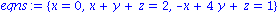
| > | solve( eqns, {x,y,z} ); |
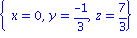
With a point and a direction, we can specify the line.
| > | linevec:= <0,-1,7>/3 + t*v; |
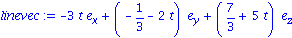
Alternative method
Since it's so easy to find one point on the line, we might as well go ahead and find another.
| > | eqns:= { plane1, plane2, y=0 }; |
| > | solve( eqns, {x,y,z} ); |
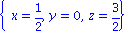
With two points on the line, we've got it.
| > | P:= [0,-1,7]/3: Q:=[1,0,3]/2: |
| > | linevec:= Vector(P) + t*Vector(Q-P); |
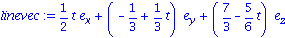
It's not obvious, but this is another equation for the same line we got before.
Plot of the solution
| > | p1:= implicitplot3d( plane1, x=-10..10, y=-10..10, z=-10..10, style=wireframe, color=red ): |
| > | p2:= implicitplot3d( plane2, x=-10..10, y=-10..10, z=-10..10, style=wireframe, color=blue ): |
| > | p3:= spacecurve( convert(linevec,list), t=-30..30, color=black, thickness=3 ): |
| > | display( {p1,p2,p3}, axes=none, view=[-10..10,-10..10,-10..10] ); |
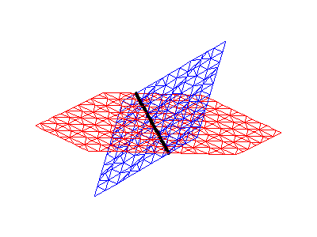